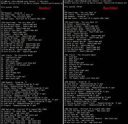
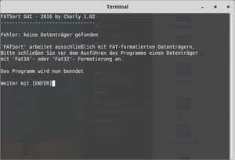
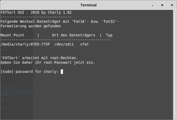
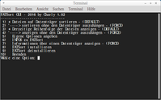
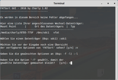
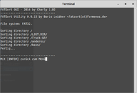
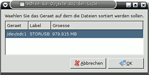

FATSort
Dieser Artikel wurde für die folgenden Ubuntu-Versionen getestet:
Ubuntu 16.04 Xenial Xerus
Ubuntu 14.04 Trusty Tahr
Zum Verständnis dieses Artikels sind folgende Seiten hilfreich:
 FATSort ist ein Kommandozeilenprogramm, das es erlaubt, Dateien und Verzeichnisse in FAT16- und FAT32-Dateisystemen in der gewünschten Reihenfolge zu sortieren. Die Problematik, dass Musikstücke in falscher Reihenfolge abgespielt werden, könnte Nutzern von mobilen oder in Fahrzeugen verbauten Musikabspielgeräten bekannt sein.
FATSort ist ein Kommandozeilenprogramm, das es erlaubt, Dateien und Verzeichnisse in FAT16- und FAT32-Dateisystemen in der gewünschten Reihenfolge zu sortieren. Die Problematik, dass Musikstücke in falscher Reihenfolge abgespielt werden, könnte Nutzern von mobilen oder in Fahrzeugen verbauten Musikabspielgeräten bekannt sein.
Dieser Vorgang des Sortierens ist notwendig, da unter Linux die Dateien in der Dateizuordnungstabelle in der Reihenfolge, wie sie kopiert wurden, eingetragen werden und Abspielgeräte diese üblicher Weise nach eben jener abspielen. Das Programm behebt diesen Missstand, indem es die Tabelleneinträge alphanumerisch nach den Dateinamen umsortiert. FATSort unterstützt lange Dateinamen und rekursives Sortieren.
Bei Bedarf existiert auch eine grafische Oberfläche für FATSort (siehe unten).
Installation¶
Folgendes Paket muss installiert [1] werden:
fatsort (universe)
 mit apturl
mit apturl
Paketliste zum Kopieren:
sudo apt-get install fatsort
sudo aptitude install fatsort
Benutzung¶
Achtung!
Bei der Verwendung von FATSort/FATSort-GUI darf die betreffende Partition nicht eingehängt sein und muss mit umount /dev/sdXY ausgehängt werden (Aushängen in der GUI (z.B. mit nemo) funktioniert nicht!)
Zur Nutzung von FATSort ist es zunächst notwendig, die Adresse des verwendeten Gerätes bzw. der Partition herauszufinden. Dazu kann man das systemeigene Partitionierungsprogramm nutzen und dort nachschauen, oder man ermittelt die entsprechenden Informationen im Terminal mit den Befehlen aus Systeminformationen ermitteln.
An den Ausgaben bzw. in der Oberfläche des Partitionierungsprogramms sollte man z.B einen USB-Stick anhand einer Bezeichnung (falls vorhanden) oder der Größe identifizieren können.
Hinweis:
In den folgenden Beispielen wird als Adresse des Gerätes bzw. der Partition immer /dev/sdXY angegeben. Diese muss auf die eigenen Belange abgestellt werden (siehe Wie heißen die Datenträger).
Unter Verwendung der zuvor erhaltenen Information kann man das Programm nun mit Root-Rechten [2] in einem Terminal [3] ausführen:
sudo fatsort /dev/sdXY
In diesem Fall wurden keinerlei Optionen angegeben, was bedeutet, dass der Standardwert "Verzeichnisse zuerst" verwendet wird. Ob der Befehl korrekt ausgeführt wurde, kann man nun unter Nutzung der Option -l (kleines L) überprüfen. Die Ausgabe zeigt im Idealfall, dass nun alle Dateien und/oder Verzeichnisse in alphanumerischer Folge sortiert sind.
|  |
| Gegenüberstellung der Verzeichnisstruktur vor und nach der Benutzung von FATSort |
| Übersicht der relevanten Optionen von FATSort | |
| Option | Erklärung |
-c | Klein- oder Großschreibung ignorieren |
-o d | Sortierreihenfolge: Verzeichnisse zuerst (Voreinstellung) |
-o f | Sortierreihenfolge: Dateien zuerst |
-o a | Sortierreihenfolge: Keine Unterscheidung zwischen Verzeichnissen und Dateien |
-l | Listen der momentane Reihenfolge der Dateien und Verzeichnisse |
-h | Anzeigen der Hilfsinformationen und aller verfügbaren Optionen von FATSort |
Grafische Oberfläche für FATSort¶
Hinweis:
Dies ist eine auf bash basierende, im Terminal ausgeführte GUI von einem FATSort Nutzer.
Das Script prüft, ob FATSort bereits installiert wurde und bietet dem Benutzer auch gleich die nachträgliche Installation an. Weiterhin besteht die Möglichkeit, FATSort mit eigenen Optionen auszuführen....
 
  
Kopieren Sie das Script in eine neue Datei und speichern diese beispielsweise als "ihrdateiname.sh" ab, anschliessend machen Sie diese via 'chmod +x ihrdateiname.sh' ausführbar. Navigieren Sie aber zuerst mit 'cd Verzeichnisname' in das Verzeichnis, wo sich die erstellte Datei befindet und.
Hier der passende Code
cd verzeichnisname chmod +x ihrdateiname.sh
Anschliessend im Terminal ausführen. Der Rest sollte selbsterklärend sein.
1 2 3 4 5 6 7 8 9 10 11 12 13 14 15 16 17 18 19 20 21 22 23 24 25 26 27 28 29 30 31 32 33 34 35 36 37 38 39 40 41 42 43 44 45 46 47 48 49 50 51 52 53 54 55 56 57 58 59 60 61 62 63 64 65 66 67 68 69 70 71 72 73 74 75 76 77 78 79 80 81 82 83 84 85 86 87 88 89 90 91 92 93 94 95 96 97 98 99 100 101 102 103 104 105 106 107 108 109 110 111 112 113 114 115 116 117 118 119 120 121 122 123 124 125 126 127 128 129 130 131 132 133 134 135 136 137 138 139 140 141 142 143 144 145 146 147 148 149 150 151 152 153 154 155 156 157 158 159 160 161 162 163 164 165 166 167 168 169 170 171 172 173 174 175 176 177 178 179 180 181 182 183 184 185 186 187 188 189 190 191 192 193 194 195 196 197 198 199 200 201 202 203 204 205 206 207 208 209 210 211 212 213 214 215 216 217 218 219 220 221 222 223 224 225 226 227 228 229 230 231 232 233 234 235 236 237 238 239 240 241 242 243 244 245 246 247 248 249 250 251 252 253 254 255 256 257 258 259 260 261 262 263 264 265 266 267 268 269 270 271 272 273 274 275 276 277 278 279 280 281 282 283 284 285 286 287 288 289 290 291 292 293 294 295 296 297 298 299 300 301 302 303 304 305 306 307 308 309 310 311 312 313 314 315 316 317 318 319 320 321 322 323 324 325 326 327 328 329 330 331 332 333 334 335 336 337 338 339 340 341 342 343 344 345 346 347 348 349 350 351 352 353 354 355 356 357 358 359 360 361 362 363 364 365 366 367 368 369 370 371 372 373 374 375 376 377 378 379 380 381 382 383 384 385 386 387 388 389 390 391 392 393 394 395 396 397 398 399 400 401 402 403 404 405 406 407 408 409 410 411 412 413 414 415 416 417 418 419 420 421 422 423 424 425 426 427 428 429 430 431 432 433 434 435 436 437 438 439 440 441 442 443 444 445 446 447 448 449 450 451 452 453 454 455 456 457 458 459 460 461 462 463 464 465 466 467 468 469 470 471 472 473 474 475 476 477 478 479 480 | #!/bin/bash # init function pause(){ read -p "$*" } if [[ ! -f $(which fatsort 2>/dev/null) ]] then reset printf "FATSort GUI - 2016 by Charly 1.02" printf "\n---------------------------------\n" printf "Fehler: Das Paket 'FATSort' muss zum Ausführen des Programmes installert sein.\n\n" read -p "Soll es jetzt installiert werden? [y/n] :" input if [ -Z $input ] ; then reset printf "FATSort GUI - 2016 by Charly 1.02" printf "\n---------------------------------\n" printf "Sie haben keine Auswahl getroffen\n\n" printf "Das Paket 'FATSort' muss zum ausführen des Programmes installert sein.\nStarten Sie das Programm erneut und geben Sie zur Installation von FATSort\nden Buchsatben [y] ein. Alternativ können Sie das Paket über das Terminal\nmit folgendem Befehl installieren\n\n'sudo apt-get install fatsort'\n\n\n\n" printf "Das Programm wird nun beendet\n\n" pause "Weiter mit [ENTER]" exit else if [ `echo $input` == "y" ]; then reset printf "FATSort GUI - 2016 by Charly 1.02" printf "\n---------------------------------\n" sudo apt-get install -y fatsort reset printf "FATSort GUI - 2016 by Charly 1.02" printf "\n---------------------------------\n" printf "Die Installation von FATSort wurde abgeschlossen.\n" else if [ `echo $input` == "n" ]; then reset printf "FATSort GUI - 2016 by Charly 1.02" printf "\n---------------------------------\n" printf "Das Paket 'FATSort' muss zum ausführen des Scipts installert sein.\n\n" printf "Sie können es über das Terminal mit folgendem Befehl installieren\n\n'sudo apt-get install fatsort'\n\n" printf "Das Programm wird nun beendet\n\n" pause "Weiter mit [ENTER]" exit fi fi fi fi reset printf "FATSort GUI - 2016 by Charly 1.02" printf "\n---------------------------------\n" printf "suche Datenträger ." sleep 2 clear printf "FATSort GUI - 2016 by Charly 1.02" printf "\n---------------------------------\n" printf "Hier eine Liste Ihrer angeschlossenen Wechsel-Datenträger:\n" printf "Mount Point | Ort des Datenträgers | Typ" printf "\n---------------------------------------------------\n" if findmnt -mo TARGET,SOURCE,FSTYPE | grep -e "sd[b-z]" | grep vfat; then printf "\n\n'FATSort' arbeitet mit root-Rechten.\nGeben Sie daher ihr root-Passwort jetzt ein.\n\n" sudo findmnt -mo TARGET,SOURCE,FSTYPE | grep -e "sd[b-z]" | grep vfat; reset printf "FATSort GUI - 2016 by Charly 1.02" printf "\n---------------------------------\n" PS3="Wähle eine Option: " options=("+ Dateien auf Datenträger sortieren - (DEFAULT)" "'----> sortieren ohne den Datenträger auszuhängen - (FORCE)" "+ Derzeitige Reihenfolge der Dateien anzeigen - (DEFAULT)" "'----> anzeigen ohne den Datenträger auszuhängen - (FORCE)" " Eigene Optionen angeben" " INFOS zu FATSort" " Informationen über einen Datenträger anzeigen - (FORCE)" " FATSort installieren" " FATSort deinstallieren" " Beenden") select option in "${options[@]}" do case $option in "+ Dateien auf Datenträger sortieren - (DEFAULT)") if findmnt -mo TARGET,SOURCE,FSTYPE | grep -e "sd[b-z]" | grep vfat; then reset printf "FATSort GUI - 2016 by Charly 1.02" printf "\n---------------------------------\n" printf "\nMit [ENTER] können Sie die Eingabe überspringen\n\n" printf "Hier eine Liste Ihrer angeschlossenen Wechsel-Datenträger:\n" printf "Mount Point | Ort des Datenträgers | Typ" printf "\n---------------------------------------------------\n" findmnt -mo TARGET,SOURCE,FSTYPE | grep -e "sd[b-z]" | grep vfat printf "\n" read -p "Welcher Datenträger soll sortiert werden (Bsp: sdc1) :" disk if [ -Z $disk ] ; then reset printf "FATSort GUI - 2016 by Charly 1.02" printf "\n---------------------------------\n" printf "Sie haben keinen Datenträger angegeben\n\n" else if [ "`mount|grep /dev/$disk`" != "" ] ; then reset printf "FATSort GUI - 2016 by Charly 1.02" printf "\n---------------------------------\n" read -p "'$disk' wird ausgehängt und 'FATSort' gestartet, OK? [y/n] :" input if [ -Z $input ] ; then reset printf "FATSort GUI - 2016 by Charly 1.02" printf "\n---------------------------------\n" printf "Sie haben keine Auswahl getroffen\n" else if [ `echo $input` == "n" ]; then reset printf "FATSort GUI - 2016 by Charly 1.02" printf "\n---------------------------------\n" printf "Abbruch...\n" sleep 1 else if [ `echo $input` == "y" ]; then reset printf "FATSort GUI - 2016 by Charly 1.02" printf "\n---------------------------------\n" printf "'$disk' wird ausgehängt und 'FATSort' gestartet, OK? [y/n] : y\n" sudo umount /dev/$disk && sudo fatsort /dev/$disk printf "Fertig...\n" sleep 1 fi fi fi else reset printf "FATSort GUI - 2016 by Charly 1.02" printf "\n---------------------------------\n" printf "Fehler: falsche Eingabe\n\n" fi fi else reset printf "FATSort GUI - 2016 by Charly 1.02" printf "\n---------------------------------\n" printf "Fehler: keine Datenträger gefunden\n\nTrennen Sie den Datenträger vom Computer und\nverbinden bzw. mounten Sie diesen erneut.\n\n" fi ;; "'----> sortieren ohne den Datenträger auszuhängen - (FORCE)") if findmnt -mo TARGET,SOURCE,FSTYPE | grep -e "sd[b-z]" | grep vfat; then reset printf "FATSort GUI - 2016 by Charly 1.02" printf "\n---------------------------------\n" printf "\nMit [ENTER] können Sie die Eingabe überspringen\n\n" printf "Hier eine Liste Ihrer angeschlossenen Wechsel-Datenträger:\n" printf "Mount Point | Ort des Datenträgers | Typ" printf "\n---------------------------------------------------\n" findmnt -mo TARGET,SOURCE,FSTYPE | grep -e "sd[b-z]" | grep vfat printf "\n" read -p "Welcher Datenträger soll sortiert werden (Bsp: sdc1) :" disk if [ -Z $disk ] ; then reset printf "FATSort GUI - 2016 by Charly 1.02" printf "\n---------------------------------\n" printf "Sie haben keinen Datenträger angegeben\n\n" else if [ "`mount|grep /dev/$disk`" != "" ] ; then reset printf "FATSort GUI - 2016 by Charly 1.02" printf "\n---------------------------------\n" sudo fatsort -f /dev/$disk printf "Fertig...\n" sleep 1 else reset printf "FATSort GUI - 2016 by Charly 1.02" printf "\n---------------------------------\n" printf "Fehler: falsche Eingabe\n\n" fi fi else reset printf "FATSort GUI - 2016 by Charly 1.02" printf "\n---------------------------------\n" printf "Fehler: keine Datenträger gefunden\n\nTrennen Sie den Datenträger vom Computer und\nverbinden bzw. mounten Sie diesen erneut.\n\n" fi ;; "+ Derzeitige Reihenfolge der Dateien anzeigen - (DEFAULT)") if findmnt -mo TARGET,SOURCE,FSTYPE | grep -e "sd[b-z]" | grep vfat; then reset printf "FATSort GUI - 2016 by Charly 1.02" printf "\n---------------------------------\n" printf "\nMit [ENTER] können Sie die Eingabe überspringen\n\n" printf "Hier eine Liste Ihrer angeschlossenen Wechsel-Datenträger:\n" printf "Mount Point | Ort des Datenträgers | Typ" printf "\n---------------------------------------------------\n" findmnt -mo TARGET,SOURCE,FSTYPE | grep -e "sd[b-z]" | grep vfat printf "\n" read -p "Welcher Datenträger soll angezeigt werden (Bsp: sdc1) :" disk if [ -Z $disk ] ; then reset printf "FATSort GUI - 2016 by Charly 1.02" printf "\n---------------------------------\n" printf "Sie haben keinen Datenträger angegeben\n\n" else if [ "`mount|grep /dev/$disk`" != "" ] ; then reset printf "FATSort GUI - 2016 by Charly 1.02" printf "\n---------------------------------\n" read -p "'$disk' wird ausgehängt und 'FATSort' gestartet, OK? [y/n] :" input if [ -Z $input ] ; then reset printf "FATSort GUI - 2016 by Charly 1.02" printf "\n---------------------------------\n" printf "Sie haben keine Auswahl getroffen\n" else if [ `echo $input` == "n" ]; then reset printf "FATSort GUI - 2016 by Charly 1.02" printf "\n---------------------------------\n" printf "Abbruch...\n" sleep 1 else if [ `echo $input` == "y" ]; then reset printf "FATSort GUI - 2016 by Charly 1.02" printf "\n---------------------------------\n" printf "'$disk' wird ausgehängt und 'FATSort' gestartet, OK? [y/n] : y\n" sudo umount /dev/$disk && sudo fatsort -l /dev/$disk fi fi fi else reset printf "FATSort GUI - 2016 by Charly 1.02" printf "\n---------------------------------\n" printf "Fehler: falsche Eingabe\n\n" fi fi else reset printf "FATSort GUI - 2016 by Charly 1.02" printf "\n---------------------------------\n" printf "Fehler: keine Datenträger gefunden\n\nTrennen Sie den Datenträger vom Computer und\nverbinden bzw. mounten Sie diesen erneut.\n\n" fi ;; "'----> anzeigen ohne den Datenträger auszuhängen - (FORCE)") if findmnt -mo TARGET,SOURCE,FSTYPE | grep -e "sd[b-z]" | grep vfat; then reset printf "FATSort GUI - 2016 by Charly 1.02" printf "\n---------------------------------\n" printf "\nMit [ENTER] können Sie die Eingabe überspringen\n\n" printf "Hier eine Liste Ihrer angeschlossenen Wechsel-Datenträger:\n" printf "Mount Point | Ort des Datenträgers | Typ" printf "\n---------------------------------------------------\n" findmnt -mo TARGET,SOURCE,FSTYPE | grep -e "sd[b-z]" | grep vfat printf "\n" read -p "Welcher Datenträger soll sortiert werden (Bsp: sdc1) :" disk if [ -Z $disk ] ; then reset printf "FATSort GUI - 2016 by Charly 1.02" printf "\n---------------------------------\n" printf "Sie haben keinen Datenträger angegeben\n\n" else if [ "`mount|grep /dev/$disk`" != "" ] ; then reset printf "FATSort GUI - 2016 by Charly 1.02" printf "\n---------------------------------\n" sudo fatsort -f -l /dev/$disk else reset printf "FATSort GUI - 2016 by Charly 1.02" printf "\n---------------------------------\n" printf "Fehler: falsche Eingabe\n\n" fi fi else reset printf "FATSort GUI - 2016 by Charly 1.02" printf "\n---------------------------------\n" printf "Fehler: keine Datenträger gefunden\n\nTrennen Sie den Datenträger vom Computer und\nverbinden bzw. mounten Sie diesen erneut.\n\n" fi ;; " Informationen über einen Datenträger anzeigen - (FORCE)") if findmnt -mo TARGET,SOURCE,FSTYPE | grep -e "sd[b-z]" | grep vfat; then reset printf "FATSort GUI - 2016 by Charly 1.02" printf "\n---------------------------------\n" printf "\nMit [ENTER] können Sie die Eingabe überspringen\n\n" printf "Hier eine Liste Ihrer angeschlossenen Wechsel-Datenträger:\n" printf "Mount Point | Ort des Datenträgers | Typ" printf "\n---------------------------------------------------\n" findmnt -mo TARGET,SOURCE,FSTYPE | grep -e "sd[b-z]" | grep vfat printf "\n" read -p "Informationen zu welchem Datentröger? (Bsp: sdc1) :" disk if [ -Z $disk ] ; then reset printf "FATSort GUI - 2016 by Charly 1.02" printf "\n---------------------------------\n" printf "Sie haben keinen Datenträger angegeben\n\n" else if [ "`mount|grep /dev/$disk`" != "" ] ; then reset printf "FATSort GUI - 2016 by Charly 1.02" printf "\n---------------------------------\n" sudo fatsort -f -i /dev/$disk else reset printf "FATSort GUI - 2016 by Charly 1.02" printf "\n---------------------------------\n" printf "Fehler: falsche Eingabe\n\n" fi fi else reset printf "FATSort GUI - 2016 by Charly 1.02" printf "\n---------------------------------\n" printf "Fehler: keine Datenträger gefunden\n\nTrennen Sie den Datenträger vom Computer und\nverbinden bzw. mounten Sie diesen erneut.\n\n" fi ;; " INFOS zu FATSort") reset fatsort -h ;; " Eigene Optionen angeben") reset printf "FATSort GUI - 2016 by Charly 1.02" printf "\n---------------------------------\n\n" printf "Es werden in diesem Bereich keine Fehler abgefangen... \n\n" printf "Hier eine Liste Ihrer angeschlossenen Wechsel-Datenträger:\n" printf "Mount Point | Ort des Datenträgers | Typ" printf "\n---------------------------------------------------\n" findmnt -mo TARGET,SOURCE,FSTYPE | grep -e "sd[b-z]" | grep vfat printf "\n" read -p "Wählen Sie einen Datenträger (Bsp: sdc1) :" disk printf "\nMöchten Sie vor der Eingabe noch eine Übersicht\n" read -p "der verfügbaren Optionen von 'FATSort' sehen? [y/n] :" input if [ `echo $input` == "y" ]; then reset printf "FATSort GUI - 2016 by Charly 1.02" printf "\n---------------------------------\n\n" fatsort -h fi printf "\n" read -p "Geben Sie die gewünschten Optionen an (Bsp: -f -l) :" option printf "\nHaben Sie die Option '-f' gewählt, damit der\n" read -p "gewählte Datenträger gemountet bleibt? [y/n]: " force if [ `echo $force` == "n" ]; then sudo umount /dev/$disk fi reset printf "FATSort GUI - 2016 by Charly 1.02" printf "\n---------------------------------\n\n" sudo fatsort $option /dev/$disk printf "\n" ;; " FATSort installieren") reset printf "FATSort GUI - 2016 by Charly 1.02" printf "\n---------------------------------\n" printf "Das Paket 'FATSort' muss zum Ausführen des Programmes installert sein.\n\n" read -p "Soll es jetzt installiert werden? [y/n] :" input if [ -Z $input ] ; then reset printf "FATSort GUI - 2016 by Charly 1.02" printf "\n---------------------------------\n" printf "Sie haben keine Auswahl getroffen\n\n" printf "Das Paket 'FATSort' muss zum ausführen des Programmes installert sein.\nStarten Sie das Programm erneut und geben Sie zur Installation von FATSort\nden Buchsatben [y] ein. Alternativ können Sie das Paket über das Terminal\nmit folgendem Befehl installieren\n\n'sudo apt-get install fatsort'\n\n\n\n" else if [ `echo $input` == "y" ]; then reset printf "FATSort GUI - 2016 by Charly 1.02" printf "\n---------------------------------\n" sudo apt-get install -y fatsort reset printf "FATSort GUI - 2016 by Charly 1.02" printf "\n---------------------------------\n" printf "Die Installation von FATSort wurde abgeschlossen.\n" else if [ `echo $input` == "n" ]; then reset printf "FATSort GUI - 2016 by Charly 1.02" printf "\n---------------------------------\n" printf "Das Paket 'FATSort' muss zum ausführen des Scipts installert sein.\n\n" printf "Sie können es über das Terminal mit folgendem Befehl installieren\n\n'sudo apt-get install fatsort'\n\n" fi fi fi ;; " FATSort deinstallieren") reset printf "FATSort GUI - 2016 by Charly 1.02" printf "\n---------------------------------\n" printf "Das Paket 'FATSort' muss zum Ausführen des Programmes installert sein.\n\n" read -p "Soll es trozdem jetzt deinstalliert werden? [y/n] :" input if [ -Z $input ] ; then reset printf "FATSort GUI - 2016 by Charly 1.02" printf "\n---------------------------------\n" printf "Sie haben keine Auswahl getroffen\n\n" else if [ `echo $input` == "y" ]; then reset printf "FATSort GUI - 2016 by Charly 1.02" printf "\n---------------------------------\n" sudo apt-get autoremove -y fatsort reset printf "FATSort GUI - 2016 by Charly 1.02" printf "\n---------------------------------\n" printf "Die Deinstallation von FATSort wurde abgeschlossen.\n" else if [ `echo $input` == "n" ]; then reset printf "FATSort GUI - 2016 by Charly 1.02" printf "\n---------------------------------\n" printf "Sie können FATSort auch über das Terminal mit folgendem Befehl deinstallieren\n\n'sudo apt-get autoremove fatsort'\n\n" fi fi fi ;; " Beenden") clear printf "FATSort GUI - 2016 by Charly 1.02" printf "\n----------------------------------\n" printf "Programm beenden\n\n" printf "Danke das Sie dieses Script genutzt haben!" sleep 2 exit ;; *) reset printf "FATSort GUI - 2016 by Charly 1.02" printf "\n---------------------------------\n" echo "Falsche eingabe" ;; esac printf "\n---------------------------------\n" pause "Mit [ENTER] zurück zum Menü" reset printf "FATSort GUI - 2016 by Charly 1.02" printf "\n---------------------------------\n" done else reset printf "FATSort GUI - 2016 by Charly 1.02" printf "\n---------------------------------\n\n" printf "Fehler: keine Datenträger gefunden\n\n" printf "'FATSort' arbeitet ausschließlich mit FAT-formatierten Datenträgern.\n" printf "Bitte schließen Sie vor dem Ausführen des Programms einen Datenträger\n" printf "mit 'Fat16'- oder 'Fat32'- Formatierung an.\n\n" printf "Das Programm wird nun beendet\n\n" pause "Weiter mit [ENTER]" fi ;; |
Sie können zusätzlich auch eine Verküpfung erstellen, um das Script direkt per Doppelklick auszuführen. Dafür erstellen Sie eine Datei mit folgendem Inhalt:
1 2 3 4 5 6 | [Desktop Entry] Comment= Terminal=true Name=FATSort GUI by Charly Exec=/PfadzurDatei/ihrdateiname.sh Type=Application |
Speichern Sie diese Datei als 'namederverknüpfung.desktop' auf Ihrem Schreibtisch ab und führen Sie das Script nun über diesen Starter aus.
Eine weitere Möglichkeit, bietet ein kleines Python-Skript¶
Wer FATSort lieber mittels einer GUI verwenden möchte, hat die Möglichkeit, dies mittels eines kleinen Python-Skriptes zu tun. Letzteres wurde von einem Nutzer von FATSort geschrieben, von dessen Blogseite man sich das besagte Skript herunterladen 
 (Alternativlink ) kann.
(Alternativlink ) kann.
Nachdem dies erfolgt ist, wechselt man im Terminal in das Verzeichnis mit dem Python-Skript. Um es auch verwenden zu können, muss es zunächst ausführbar [5] gemacht werden:
chmod +x fatsort-gui.py
Nun startet man das Programm mit Root-Rechten:
sudo ./fatsort-gui.py
Wer nicht jedes mal ein Terminal öffnen und den Befehl eintippen möchte, kann alternativ auch einen Menüeintrag anlegen [6].
 Im sich nun öffnenden Fenster werden einem alle verfügbaren in Frage kommenden Partitionen, ihre eventuell vorhandenen Bezeichnungen sowie deren Größe angezeigt, wie auch im Bild rechts zu sehen ist. Man kann nun seine Auswahl der zu bearbeitenden Partition treffen, falls mehrere vorhanden sind, und mit einem Klick auf "OK" den Vorgang durchführen lassen. In der Folge schließt sich das Fenster und das Programm ist damit ordnungsgemäß beendet.
Die Möglichkeit, zusätzliche Optionen zu nutzen, ist bei der GUI-Variante des Programms leider nicht gegeben.
- Erstellt mit Inyoka
-
 2004 – 2017 ubuntuusers.de • Einige Rechte vorbehalten
2004 – 2017 ubuntuusers.de • Einige Rechte vorbehalten
Lizenz • Kontakt • Datenschutz • Impressum • Serverstatus -
Serverhousing gespendet von